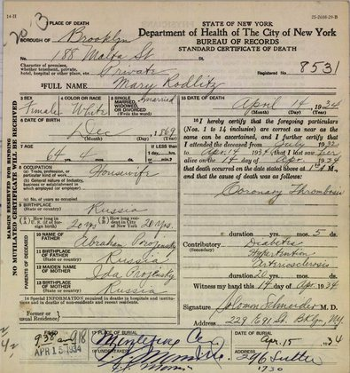
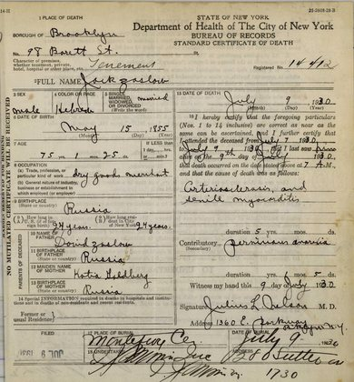
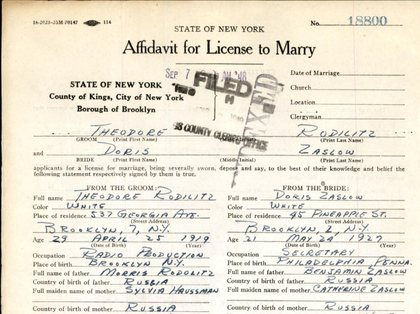

The records behind the history
Every source used in the research has a permanent code and, where one exists, a permanent link. 121 sources are listed.
Most of the records are online in the collections named. The images below are those reproduced in the family history; the rest can be opened from their links (some need a free FamilySearch or a paid Ancestry account). Sources marked as searched with no result are listed too, so the same ground need not be covered twice.
Records shown in the history






No matching sources. Try another spelling, or .
Original records
RZ-S01
New York City, Kings County, Certificate and Record of Marriage No. 12476 (1915): Morris Rodilitz and Sivia Hausman, 7 Nov 1915. NYC Municipal Archives, Historical Vital Records, M-K-1915-0012476 (indexed as "Morris Rodotitz"). · image
· Morris Rodilitz, Sylvia Hausman (Rodilitz), Jacob Rodilitz, Mary (Miriam Reizel) Prozansky (Rodilitz), Joseph Hausman, Rose Shapiro (Hausman)RZ-S02
New York City, Kings County, Standard Certificate of Death No. 8531 (1934): Mary Rodlitz, 14 Apr 1934. NYC Municipal Archives, Historical Vital Records, D-K-1934-008531. · image
· Mary (Miriam Reizel) Prozansky (Rodilitz), Abraham Prozansky, Ida ProzanskyRZ-S05
Probably a different man. Philadelphia passenger list, SS Friesland, sailed Liverpool 6 Jan 1904, arrived Philadelphia Jan 1904, list 13, line 27: Beni Zaslowsky. NARA microfilm T840, roll 54. Statue of Liberty–Ellis Island Foundation record 23QV-H13 ("Pennsylvania, Philadelphia, Passenger Lists, 1883–1945").
RZ-S05a
Philadelphia passenger list index card for the same arrival (record KF6S-56V, "Pennsylvania, Philadelphia, Passenger List Index Cards, 1883–1948").
RZ-S06
Bessie, Beckie and Catherine. Ellis Island passenger manifest, SS Circassia from Glasgow, arrived New York 3 Jul 1893 (image 262 of 647): Basche, Leib, Jety and Beile Zaslaw, bound for Philadelphia. Statue of Liberty–Ellis Island Foundation records J61Q-W2J (Basche) and J61Q-W22 (Beile). · image
statueofliberty.org/arrival-details/?id=J61Q-W2J and statueofliberty.org/arrival-details/?id=J61Q-W22
· Bessie Weiss (Saslow), Leib ZaslawRZ-S07
U.S., World War II Draft Cards Young Men, 1940–1947: Theodore Rodilitz, serial 2989, order 1130, Brooklyn. Ancestry. · image
ancestry.com/discoveryui-content/view/194118794:2238 (captured 31 Oct 2026) · also FamilySearch familysearch.org/ark:/61903/1:1:W446-4S6Z
· Theodore Rodilitz, Sylvia Hausman (Rodilitz)RZ-S12
New York City, Bronx, Certificate of Death No. 9254 (1932): Rose Hausman. NYC Municipal Archives D-B-1932-0009254. Sylvia's mother.
· Rose Shapiro (Hausman)RZ-S13
NYC, Kings, Certificate and Record of Marriage No. 1350 (1919): Harry Radolitz and Fannie Bunder, 8 Feb 1919. NYC Municipal Archives M-K-1919-0001350.
· Harry Rodilitz, Fannie BunderRZ-S14
NYC, Kings, Marriage No. 8948 (1927): Irving Hovelin and Ida Rodlitz, 26 Jun 1927. M-K-1927-0008948.
· Ida Rodilitz (Hovelin), Irving HovelinRZ-S15
NYC, Kings, Marriage No. 9704 (1927): Sol Feinberg and Esther Rodletz, 2 Jul 1927. M-K-1927-0009704.
· Esther Rodilitz (Feinberg), Sol FeinbergRZ-S16
NYC, Kings, Marriage No. 9870 (1929): Martin Gordon and Sarah Rodlitz, 4 Jul 1929. M-K-1929-0009870.
· Sarah Rodilitz (Gordon), Martin GordonRZ-S17
NYC, Kings, Marriage No. 11831 (1932): Meyer Rodlitz and Henrietta Frankel, 25 Aug 1932. M-K-1932-0011831.
· Meyer Rodilitz, Henrietta FrankelRZ-S18
NYC, Kings, Marriage No. 10000 (1934): Louis Rodolitz and Gertrude Kaplan, 29 Jun 1934. M-K-1934-0010000.
· Louis Rodilitz, Gertrude KaplanRZ-S19
NYC, Kings, Certificate of Death No. 15165 (1924): "Baby Rodlitz", 10 Aug 1924, son of Morris Rodlitz and Sylvia Hausman. D-K-1924-0015165.
· Baby Rodilitz (son)RZ-S20
Ellis Island passenger manifest, SS Royal George from Southampton (sailed 22 Oct 1919), arrived New York 8 Nov 1919, sheet 8, line 8: Meyer M. Rodlitz; nearest relative "Father. J Rodlitz. 188 Malta Street, Brooklyn". NARA T715 roll 2696, image 670. Statue of Liberty–Ellis Island Foundation record J678-H2G.
· Meyer RodilitzRZ-S21
NYC, Kings, Certificate of Death No. 11807 (1936): Stanley Rodolitz, 24 May 1936, son of Harry Rodlitz and Fanny Bunder. D-K-1936-0011807.
· Stanley RodolitzRZ-S22
Declaration of intention no. 67614, Benjamin Zaslow, 9 Nov 1921, US District Court, Eastern District of Pennsylvania. "Pennsylvania, U.S., Federal Naturalization Records, 1795–1945", Ancestry collection 2717, from NARA Philadelphia, RG 21.
Record: ancestry.com/discoveryui-content/view/1743238:2717 · Image: ancestry.com/imageviewer/collections/2717/images/31311_137566-00748
· Benjamin ZaslowRZ-S23
Petition for naturalization no. 62333 (19 Nov 1923), oath and order, certificate no. 1953580 (10 Mar 1924), Benjamin Zaslow. Same collection.
Petition: ancestry.com/discoveryui-content/view/3639:2717 · Oath: ancestry.com/discoveryui-content/view/1743237:2717 · Images:.../images/31311_137566-00748 and ancestry.com/imageviewer/collections/2717/images/31311_137566-00749
· Benjamin Zaslow, Sylvia Zaslow, Edward ZaslowRZ-S24
1930 US census, Philadelphia Ward 25, 2163 E. Cambria St, dwelling 299, family 304: Beniyam, Catherine, Sylva, Edward and Doris Zaslow. Ancestry collection 6224.
· Benjamin Zaslow, Sylvia Zaslow, Edward ZaslowRZ-S25
Philadelphia passenger list, SS Haverford, sailed Liverpool 2 Mar 1904, arrived 14 Mar 1904: Itzik, Berl and David Saslawer (lead only). NARA T840 roll 45. Ancestry collection 8769.
RZ-S26
Ancestry copy of the SS Friesland list (same as RZ-S05), arrival date indexed 18 Jan 1904.
RZ-S27
1900 US census, Philadelphia Ward 3, ED 59, sheet 6B, lines 61–67, 787 S 3rd St: Benjamin, Bessie, Beckie, Katie, Louis, Herman, Mollie Saslow. NARA T623 roll 1453. Ancestry collection 7602.
Katie: ancestry.com/discoveryui-content/view/52669068:7602 · Benjamin: ancestry.com/discoveryui-content/view/52669065:7602 · Image: ancestry.com/imageviewer/collections/7602/images/4115179_00089
· Benjamin Saslow, Bessie Weiss (Saslow), Beckie Saslow (Mitchell), Louis Saslow, Herman Saslow, Mollie SaslowRZ-S28
1910 US census, Philadelphia Ward 39, ED 970, sheet 13B, 1924 Fifth St: Saslow family (indexed "Sarlow"), Kate 17. Ancestry collection 7884.
ancestry.com/discoveryui-content/view/106998660:7884 · Image: ancestry.com/imageviewer/collections/7884/images/4449860_00183
· Benjamin Saslow, Bessie Weiss (Saslow)RZ-S29
1920 US census, Benjamin Saslow household, Philadelphia. Ancestry collection 6061.
RZ-S30
Declaration of intention, B. Saslaw/Benjamin Saslow, 26 Oct 1900, 787 S 3rd St; petition and oath no. 9235, 15 Dec 1902 (signed by mark), Circuit Court, ED Pa. Ancestry collection 2717.
RZ-S31
Naturalization index card, Benjamin Saslow, naturalized 15 Dec 1902, no. 9235. Ancestry collection 1629.
RZ-S32
Hamburg passenger list, ship Breslau, 16 Jun 1893, p. 122, lines 27–30: Leib, Basche, Jety and Beile Zaslaw, from Podolsk, to Philadelphia. Ancestry collection 1068.
ancestry.com/discoveryui-content/view/404019:1068 · Image: ancestry.com/imageviewer/collections/1068/images/S_13168_080820-0026
· Leib ZaslawRZ-S33
Ancestry copy of the SS Circassia list (same voyage as RZ-S06; customs list, NARA M237 roll 613): Leib Zaslaw. Ancestry collection 7488.
RZ-S34
WWI draft registration card, Louis Saslow, born 25 Sep 1895. Ancestry collection 6482.
· Louis SaslowRZ-S35
Pennsylvania death certificate, Louis Saslow, 1965, parents Benjamin and Bessie. Ancestry collection 5164.
· Louis SaslowRZ-S36
Ellis Island passenger list, SS Breslau from Bremen, arrived New York 16 Dec 1907, line 20: Motel Rodeletz, 18, of Czerniany, Gub. Grodno; mother Mariem; to father Jankel Rodeletz, 326 Snediker Ave, Brooklyn. NARA T715 roll 1061, image 236.
statueofliberty.org/arrival-details/?id=JXLG-1ZG · Ancestry: ancestry.com/discoveryui-content/view/4036791657:7488
· Jacob Rodilitz, Mary (Miriam Reizel) Prozansky (Rodilitz)RZ-S37
Declaration of intention no. 70718, Jacob Rodeletz, 13 Jun 1924, US District Court, EDNY. "New York, U.S., State and Federal Naturalization Records, 1794–1943", Ancestry collection 2280.
· Jacob RodilitzRZ-S38
Petition for naturalization no. 82022, Jacob Rodeletz, 16 Sep 1927 (eight children with birth dates). Same collection.
· Jacob Rodilitz, Mary (Miriam Reizel) Prozansky (Rodilitz), Benny Rodilitz, Ida Rodilitz (Hovelin), Esther Rodilitz (Feinberg), Sarah Rodilitz (Gordon)RZ-S39
Certificate of naturalization no. 2898975, Jacob Rodeletz, Feb 1929. Same collection.
RZ-S40
Ellis Island passenger list, SS Rotterdam, arrived 31 Jul 1911, line 21: Meier Rodeletz, 18, of Kobrin; mother R. Rodeletz; to father J. Rodeletz, 721 Vienna Ave. NARA T715 roll 1714, images 1119–1120.
RZ-S41
Ellis Island passenger list, SS Potsdam from Rotterdam (sailed 22 Jun 1912), arrived 2–3 Jul 1912, line 14: Berl Rodelets (Benjamin), 17, of Kobriny; mother Marya; held for special inquiry, admitted 5 Jul. NARA T715 roll 1892, images 653–654. His EDNY naturalization: declaration 10 Dec 1921 (ancestry.com/discoveryui-content/view/9578120:2280), petition 27 Jun 1924 (ancestry.com/discoveryui-content/view/3318634:2280), oath 2 Oct 1924 (ancestry.com/discoveryui-content/view/9578124:2280).
statueofliberty.org/arrival-details/?id=JJTJ-R35 · Ancestry: ancestry.com/discoveryui-content/view/4041601654:7488
· Benny RodilitzRZ-S42
Ellis Island passenger list, SS Cleveland from Hamburg, arrived 12 Jun 1910, line 28: Hersch Rodeletz (Harry), 18, locksmith, of Maczew; mother "Resel"; to father Jankel, 326 Snediker St, Brooklyn. NARA T715 roll 1499, images 116–117.
RZ-S43
JGSNY "Index to Brooklyn Naturalization Records 1907–1924" (Kings County Supreme Court): Rodolitz, Morris/Motel, declaration vol. 70 p. 330 (1912), petition vol. 220 p. 60; Rodolitz, Harry/Hersch, vol. 70 p. 332, petition vol. 220 p. 122. Images: FamilySearch "New York, County Naturalization Records", Kings County.
RZ-S44
Pennsylvania death certificate no. 46907, Bessie Saslow, 8 May 1936 (parents Harry Weiss and Molly Gold). Ancestry collection 5164.
· Molly Gold, Harry (Aharon) WeissRZ-S45
Pennsylvania death certificate no. 13632, Benjamin Zaslow, 29 Feb 1940 (parents Jacob and Miriam Zaslow; widower of Catherine). Ancestry collection 5164.
· Jacob (Jack) Zaslow, Miriam Lesnoff (Zaslow)RZ-S46
Pennsylvania death certificate, Beckie Mitchell (née Saslow), 26 Aug 1914 (parents Benjamin Saslow and Bessie Weiss).
· Beckie Saslow (Mitchell), Harry (Aharon) WeissRZ-S47
Pennsylvania death certificate, Mildred Zaslow, 16 Feb 1924, aged 2 months (parents Benjamin and Katie), 2208 S. 5th St.
ancestry.com/discoveryui-content/view/1263799:5164 · Image: ancestry.com/imageviewer/collections/5164/images/41381_2421406259_0596…
· Mildred ZaslowRZ-S48
Find a Grave memorial 179556327: Catherine Zaslow, d. 5 Sep 1937, Har Jehuda Cemetery, Upper Darby.
RZ-S49
Find a Grave memorial 208792137: Benjamin Saslow, d. 19 Jul 1937, Har Jehuda Cemetery.
RZ-S50
Find a Grave memorial 205024807: Benjamin Zaslow, Har Jehuda Cemetery. Stone: "Dov Ber son of R. Yochanan", d. 20 Adar I 5700, "Beloved Father", age 53. Photo: findagrave.com/memorial/205024807/benjamin-zaslow/photo
RZ-S51
Philadelphia Jewish Exponent obituary index: Benjamin Zaslow, 13 Nov 1959, age 69. A different man, not Doris's father.
RZ-S52
Philadelphia marriage licence index, no. 260214, 1910: Beny Zaslof and Katie Saslow. Ancestry "Philadelphia, Pennsylvania, Marriage Index, 1885–1951" (collection 2536) and "Pennsylvania, U.S., Marriages, 1852–1968" (61381, duplicate entries). Licence and application held by the Philadelphia Register of Wills, Marriage Record Department, City Hall Room 415.
RZ-S53
1915 New York State census, Kings, A.D. 22, E.D. 51, p. 191, lines 5–14: the Rodletz family at 115 Malta St. Ancestry collection 2703.
RZ-S54
1920 US census, Brooklyn, 188 Malta St, sheet 13A, ED 93, lines 17–28: Jacob's family and Morris's family. Ancestry collection 6061.
RZ-S55
1925 New York State census, Brooklyn, A.D. 2, E.D. 51, p. 20, line 42: Morris Rodiletz, 537 Georgia Ave, naturalized Bklyn 1921; Rose Hausman (indexed Haresman), 62, mother-in-law, 3 weeks in US. Ancestry collection 2704.
ancestry.com/discoveryui-content/view/21189649:2704 · Image: ancestry.com/imageviewer/collections/2704/images/32849_b094260-00259
· Rose Shapiro (Hausman)RZ-S56
1925 NY census, Jacob's household, 188 Malta St; 1930 US census, Jacob (188 Malta St), Morris (537 Georgia Ave), Harry; 1940 Jacob (index).
1925 Jacob: ancestry.com/discoveryui-content/view/21201947:2704 (image.../2704/images/32849_b094260-00330) · 1930 Jacob: ancestry.com/discoveryui-content/view/39563937:6224 (image.../6224/images/4661163_01014) · 1930 Morris image: ancestry.com/imageviewer/collections/6224/images/4661162_00946 · 1930 Harry: ancestry.com/discoveryui-content/view/39565216:6224 · 1940 Jacob: ancestry.com/discoveryui-content/view/14789420:2442
RZ-S57
Gravestones, Har Jehuda Cemetery, Upper Darby, PA (Find a Grave photos): Benjamin Saslow "Dov son of R. David", d. 11 Av 5697; Bessie Saslow "Batya daughter of R. Aharon", d. 16 Iyar 5696; Catherine Zaslow "Beila daughter of R. Dov", d. 29 Elul 5697, age 46.
findagrave.com/memorial/208792137/benjamin-saslow · findagrave.com/memorial/179556173/bessie-saslow · findagrave.com/memorial/179556327/catherine-zaslow
· David (Duvid) ZaslaverRZ-S58
Har Judea (Har Jehuda) Cemetery burial register, section D, line 7-1, "Tulchiner" society: Benjamin Saslow (bur. 21 Jul 1937, grave 23) and "Katie Saslow" (Catherine, bur. 8 Sep 1937, grave 22). Ancestry collection 2451.
RZ-S59
1920 US census, Philadelphia: Benjamin Saslow, paperhanger, owner, 2208 S. Fifth St. Ancestry collection 6061.
RZ-S60
Ellis Island passenger list, SS Ebro from Havana, arrived New York 12 May 1925, List 4, line 9: "Rejza Hujzman", 60, widow, born "Brassc"; daughter Fega in Havana; to daughter G. Weisberg, 636 E. 135th St; and the special-inquiry (detention) sheet, "Hausman, Reise". NARA T715 roll 3651. Ancestry collection 7488.
Record: ancestry.com/discoveryui-content/view/2000954107:7488 · Images: ancestry.com/imageviewer/collections/7488/images/NYT715_3651-0276 and ancestry.com/imageviewer/collections/7488/images/NYT715_3651-0277 · Detention sheet: ancestry.com/discoveryui-content/view/2000954188:7488 (image ancestry.com/imageviewer/collections/7488/images/NYT715_3651-0286)
· Joseph Hausman, Rose Shapiro (Hausman), Fega Hausman, G. Hausman (Mrs Weisberg)RZ-S61
Ellis Island passenger list, SS Pretoria from Hamburg, arrived 22 Dec 1913 (Ancestry: 20 Dec), List 7, lines 3–7: Marian Rodelec, 47, with Chaje 16, Ester 10, Leib 9, Sure 7, of Dwin, born Kobryn; to husband Jankel Rodeles, 721 Vienna Ave, Brooklyn; and the detained-aliens list. NARA T715 roll 2241, images 563 and 565.
statueofliberty.org/arrival-details/?id=JNTJ-PNB (children JNTJ-PN1, JNTJ-PJM, JNTJ-PJ9, JNTJ-PJS) · Ancestry: ancestry.com/discoveryui-content/view/4013069020:7488 · Detained list: ancestry.com/discoveryui-content/view/4013070965:7488
RZ-S63
Ellis Island passenger list, SS Ryndam (Rijndam) from Rotterdam (sailed 27 Apr 1907), arrived 7 May, sheet stamped 9 May 1907, List 35, line 29: "Jankel Rudales", 33, miller(?), of Mariow/Maciow(?), passage paid by brother-in-law, to brother-in-law B. Rozankrans, 70 Orchard St. Probably Jacob. NARA T715 roll 888 (Foundation image 316 = Ancestry image NYT715_888-0312).
RZ-S64
Gur Alroey, "Out of the Shtetl: In the Footsteps of Eastern European Jewish Emigrants to America, 1900–1914," Leidschrift 22:1 (2007). Costs, illegal crossings, agents, control stations.
RZ-S65
Jürgen Sielemann, "Eastern European Jewish Emigration via the Port of Hamburg, 1880–1914." June 1893 ban on Russian steerage passengers; control stations.
RZ-S66
Aubrey Newman, "Trains and Shelters and Ships" (route through Britain; the London Poor Jews' Temporary Shelter).
RZ-S67
Encyclopaedia Judaica, "Pale of Settlement" (Jewish Virtual Library): 1897 census, May Laws.
RZ-S68
Cowen Report (US National Archives, 1906–07): Jewish immigration from Russia by year.
RZ-S69
Har Jehuda Cemetery (Upper Darby, Pa.) Records, SCRC 394, Special Collections Research Center, Temple University Libraries. Burial registers 1902–1948.
RZ-S70
Har Jehuda Cemetery interment records, surnames R–Z, c.1909–1983 (microfilm XR 906:8), Historical Society of Pennsylvania.
RZ-S71
Philadelphia passenger list, SS Haverford from Liverpool (sailed 2 Mar), arrived 14 Mar 1904; image 0340, lines 20–22, the "Saslawer" group (Itzik 49, Berl 22, David 19). Negative search for Benjamin Zaslow. NARA T840 roll 45. Ancestry collection 8769.
Record: ancestry.com/discoveryui-content/view/463164:8769 · Image: ancestry.com/imageviewer/collections/8769/images/PAT840_45-0340
· Itzik (Ike) Zaslow, David SaslawerRZ-S72
Philadelphia passenger list, SS Friesland from Liverpool (sailed 9 Mar), arrived 20 Mar 1904; header image. Negative search (partly read).
RZ-S73
Holland-America Line, Register van passagegelden, Rotterdam–New York, April 1907; Stadsarchief Rotterdam 318-04 inv. 834, folio 241, line 16: "Rudoles, Jankel" (indexed "Jankel Rudoks"), Rijndam, 27 Apr 1907; booked N.A.S.M. N.Y.; prepaid net 30.50.
RZ-S74
Same series, July 1911; inv. 875, folio 75, line 29: "Rodeletz, Meier", SS Rotterdam, 22 Jul 1911; booked N.A.S.M. N.Y.; prepaid net 42.50.
RZ-S75
Same series, June 1912; inv. 886, folio 102, line 27: "Rodeletz, Berl", SS Potsdam, 22 Jun 1912; booked N.A.S.M. N.Y.; prepaid net 45.
RZ-S76
1910 US census, Brooklyn Ward 26, Kings, NY, Chester St, ED 801, sheet 19B: Jacob Zaslawer 56, Mary 56, Benjamin 26 (single, arr. 1904), Hyman 24. NARA T624 roll 978.
ancestry.com/discoveryui-content/view/102920216:7884 · Image: ancestry.com/imageviewer/collections/7884/images/4449929_00568
· Jacob (Jack) Zaslow, Miriam Lesnoff (Zaslow), Herman (Hyman) ZaslowRZ-S77
Ellis Island passenger list, SS Umbria from Liverpool, arrived 6 Aug 1906, lines 1–3: Jankel Soslawer 54, Marjem 52, Ruchle 17, of "Podol"; passage paid by son; to son c/o H. Lesnoff, 207 Hopkins St. NARA T715 roll 750, image 49. Outward list (UK, 28 Jul 1906): "Zaslower".
ancestry.com/discoveryui-content/view/4013478958:7488 (and 4013478959, 4013478960) · Image: ancestry.com/imageviewer/collections/7488/images/NYT715_750-0049 · UK outward: ancestry.com/discoveryui-content/view/48508443:2997
· Jacob (Jack) Zaslow, Miriam Lesnoff (Zaslow), Ruchle (Rachel) Zaslawer, Harry (Hirsch) LesnoffRZ-S78
UK outward passenger list, SS Haverford, Liverpool 2 Mar 1904: "T. Saslawer" born about 1875.
RZ-S79
NYC death index: Ike Zaslow, d. 14 Apr 1940, Brooklyn, certificate 8348; parents Jacob and Miriam; burial Montefiore 16 Apr 1940. Find a Grave 148848687.
· Itzik (Ike) Zaslow, Meyer ZaslowRZ-S80
NYC death index: Miriam Zaslow, d. 14 Sep 1931, Brooklyn, certificate 19516; parents Herman and Rose Lesnoff; executor Herman Zaslow, son.
· Miriam Lesnoff (Zaslow), Herman Lesnoff, Rose LesnoffRZ-S81
WWII draft registration ("old man's", 1942): Herman Zaslow, b. 15 Sep 1886, "Obodonka, Russia".
· Herman (Hyman) ZaslowRZ-S82
NYC death certificate, Brooklyn 1930 no. 14412: Jack Zaslow, d. 9 Jul 1930, 98 Barrett St; b. 15 May 1855 Russia; dry goods merchant; 24 years in US; father David Zaslow, mother Katia Goldberg; Montefiore (Block 32, Row 13R, Grave 25; Miriam in Grave 26). · image
· David Zaslow, Katia GoldbergRZ-S83
Montefiore Cemetery interment search: Jacob Rodeletz, d. 14 Jun 1950, age 81, interment 72419, Block 11, Row 7L, Grave 2; Mary Rodlitz, Grave 1; Stanley Rodlitz, Row 5L, Grave 4; society Chev. Agudath Achim Anshe New Lots. Find a Grave memorial 148960962 (Jacob).
montefiorecemetery.org/search/ (search: Rodel, Rodl) · findagrave.com/memorial/148960962/jacob-rodeletz
RZ-S84
Kings County Supreme Court naturalization papers on FamilySearch ("New York, County Naturalization Records, 1791–1980", Kings): Morris Rodolatz, declaration 34830, 15 Nov 1913 (vol. 70, image 212) and petition 54660, 1920 (vol. 220, image 215, with certificate of arrival "Rodeletz, Motel", Breslau, 16 Dec 1907); Harry Rodolitz, declaration 34832, 15 Nov 1913 (vol. 70, image 213) and petition 54722, 1920 (vol. 220, image 430, certificate of arrival "Rodeletz, Hersch", Cleveland, 13 Jun 1910).
Morris petition: familysearch.org/ark:/61903/3:1:3QS7-89MX-S9DP · Harry petition: familysearch.org/ark:/61903/3:1:3QS7-L9MX-SH1 · Morris declaration: familysearch.org/ark:/61903/3:1:3QS7-L9MX-MJ9M · Harry declaration: familysearch.org/ark:/61903/3:1:3QSQ-G9MX-MJVK
RZ-S85
Ellis Island passenger list, SS Kroonland from Antwerp (sailed 24 Jul 1909), arrived 3 Aug 1909, line 13: Moische Wolf Prozanski, 18, shoemaker, of "Du…" [Dywin]; nearest relative "sister Marina Rodelitz, Dewin, Grodno" (line struck through). NARA T715 roll 1311, p. 177. FamilySearch "New York, Passenger Arrival Lists (Ellis Island), 1892–1925", image 760 of 853.
· Moishe Velvel Prozansky (Morris W. Rosen)RZ-S86
Soundex index card, naturalization of Moishe Velval (Morris William) Prozansky (Rosen), Superior Court, Cook County, Ill., 14 Dec 1921, certificate P. 48687; born Russia 5 Mar 1892; arrived Aug 1909; 1915 Fowler St, Chicago. NARA M1285 roll 142. FamilySearch "Illinois, Northern District Naturalization Index, 1840–1950".
RZ-S87
Register of the Pacific Branch (Sawtelle), National Home for Disabled Volunteer Soldiers, no. 29829: Morris V. Prozansky alias Morris W. Rosen, enlisted 22 Oct 1915, discharged 10 Apr 1918; admitted 23 Aug 1928; pension cert. 1,226,967; nearest relative "Sister, Mary Rodeletz, address unknown, New York". NARA M1749, FHL film 1577876. FamilySearch "United States, National Homes for Disabled Volunteer Soldiers, 1866–1938".
RZ-S88
Tulchin Jewish death register, 1880, record M19: Avrum Zaslav, son of Duvid, died 2 Mar 1880, aged 7. DAVO (State Archives of Vinnytsia Oblast) fond 904, opys 35, sprava 14. Indexed in JewishGen "Ukraine Deaths, Group 2".
jewishgen.org/databases/ (search Saslow, town Tulchin; result lists have no permanent URL)
· Avrum ZaslaverRZ-S89
WWII draft registration ("old man's draft", 1942), California: Morris W. Rosen, 2716 Fairmount St, Los Angeles, b. 4 Mar 1893, Russia; employer Hollywood Clothes; contact Philip Steinfeld.
RZ-S90
California Death Index: "Morris Rosin", b. 14 Mar 1892, d. 9 Mar 1982, Los Angeles; and Find a Grave memorial 19521244, Morris W. Rosen, 13 Mar 1892 – Mar 1982, Young Israel Cemetery, Norwalk, Calif. (stone photo).
· Moishe Velvel Prozansky (Morris W. Rosen)RZ-S91
Gravestone of Jacob and Miriam Rodeletz, Montefiore Cemetery, Queens (Find a Grave 148960962/148960985, photo 2019): "Yaakov son of R. Yonah", d. 1st day Rosh Chodesh Tammuz 5710 (15 Jun 1950), age 82; "Miriam Reizel daughter of R. Avraham", d. 29 Nisan 5694 (14 Apr 1934), age 65.
findagrave.com/memorial/148960962/jacob-rodeletz · photo: images.findagrave.com/photos/2019/292/148960962_23035bfb-e36c-4257-b0d…
· Yonah Rodilitz
RZ-S92
Gravestone of Abraham J. Rodolitz (21 May 1920 – 20 Jan 1998), New Montefiore Cemetery: "Avraham Yonah son of R. Tzvi Hersh".
· Yonah Rodilitz, Abraham Jonas RodolitzRZ-S93
New Montefiore Cemetery interment search (surname Rodolitz): family-circle plot "Jacob & Miriam Rose Rodolitz FC", Block 15: Morris (d. 6 Jan 1957, 66), Sylvia (14 Dec 1952, 59), Meyer (10 Jan 1950, 55), Harry (10 Dec 1967, 76), Louis (28 Jan 1970, 65), Fannie (16 Mar 1973, 73) and others. Also Find a Grave 151756306 (Morris), 151753692 (Sylvia).
newmontefiorecemetery.org/search/ (search Rodolitz) · findagrave.com/memorial/151756306/morris-rodilitz
RZ-S94
NYC marriage licence (affidavit) L-K-1943-0016929: Theodore Rodilitz and his first wife, Brooklyn, sworn 11 Sep 1943, married 14 Sep 1943, Twin Cantors Temple. NYC Municipal Archives.
RZ-S95
NYC marriage licence (affidavit) L-K-1948-0018800: Theodore Rodilitz and Doris Zaslow, Brooklyn, sworn 7 Sep 1948; Doris b. Philadelphia 24 May 1927; Theodore's 1943 marriage annulled, Brooklyn, 23 Dec 1946. NYC Municipal Archives. · image
RZ-S96
State Archives of Vinnytsia Region (ДАВіО), fond 904, opys 35: Jewish metrical books of Tulchin, 1861–1906 (files 2–36, 320–323), free scans on Wikimedia Commons, indexed on Ukrainian Wikisource. E.g. file 20 (births 1886–89, 489 scan pages), file 24 (births 1891–95, 472), file 12 (marriages 1876–90, 298), file 2 (births 1861–66, 449).
RZ-S97
Jewish metrical books of Obodovka, Olgopol uyezd, Podolia: births (with marriages and deaths) 1845 (ДАХмО 227-2д-305, 11 pp.), 1851 (ДАХмО 227-1д-368, 13 pp.), 1852 (ДАХмО 227-2-1372, 13 pp.); marriages 1918 (ДАХмО 227-5д-515, 8 pp.). State Archives of Khmelnytskyi Region, free scans on Wikimedia Commons. No Zaslav or Lesnoy.
commons.wikimedia.org/wiki/File:ДАХмО_227-2-1372_Метрична_книга_євреїв….Ободівка,_Ольгопільський_повіт(1852).pdf (others: search Commons "Ободівка євреїв")
RZ-S98
Obodovka Jewish community: minutes of the 1918 election commission with voter and candidate lists, 20 Jun–13 Dec 1918 (ЦДАВО 1854-1-124а, 57 pp., Yiddish); and family forms of Jews applying to farm, 1927–28 (ЦДАВО 505-1-367, 23 pp.). Central State Archive of Supreme Bodies of Ukraine, free scans on Wikimedia Commons. No Zaslav or Lesnoy.
commons.wikimedia.org/wiki/File:ЦДАВО_1854-1-124а_Протоколи_засідань_к….Ободівка...(1918).pdf · commons.wikimedia.org/wiki/File:ЦДАВО_505-1-367_Реєстрації_євреїв,які_бажають_перейти_до_землеробства,_Ободівка(1927-1928).pdf
RZ-S99
Tulchin Jewish marriages, 10 Aug 1888, no. 66: Itsko Yankelevich Vaisman, 24, reservist, Tulchin townsman, and the maiden Bluma, 22, daughter of Duvid Zaslaver, "изъ Добровена" (from Dobroven, probably the Dombroveny colony, Soroki district; re-read 9 Nov 2026). ДАВіО 904-35-12 (1876–1890), PDF page 237. Free scan on Wikimedia Commons.
· Bluma Zaslaver (Vaisman)RZ-S100
Tulchin Jewish marriages 1891–1900, ДАВіО 904-35-26; 1891 on leaves 1–29. Free scan on Wikimedia Commons.
RZ-S101
Kovel uyezd revision lists, 1858: ДАЖО 118-14-119 (peasants, 1,321 pp., on Commons); Jews of Nesukhoizhi, Kovel district, 1858–74 (118-14-125, on Commons); untitled Kovel 1858 lists 118-14-120 to -130 (FamilySearch only). State Archives of Zhytomyr Region.
RZ-S102
1875 Jewish census of Podolia province (males), State Archives of Khmelnytskyi Region, fond 226, opys 80: Olgopol uyezd 226-80-1182 (1,876 pp.; Obodovka pp. 912–1059; title page 912) and 1163 (Chechelnik), 1179, 1180; Bratslav uyezd 1167 (vols 1–5), 1169, 1170. Free scans on Wikimedia Commons. Obodovka: no Zaslavsky or Lesnoy.
commons.wikimedia.org/wiki/File:ДАХмО_226-80-1182._1875_рік._Перепис_є… · index uk.wikisource.org/wiki/Архів:ДАХмО/226/80
· Benjamin Saslow, Avrum Zaslaver, Berko ZaslaverRZ-S103
JewishGen, "Bessarabia Out-of-Town Jews" database (Bessarabia SIG): 1875 census of Jews living in Tulchin, Bratslav uyezd, Podolia, but registered in Soroki, Bessarabia. Page 586, nos. 43–45: ZASLOVO Duvid son of Berko, 46, "has a receipt from the post office for sending the passport for the census"; Berko son of Duvid, 12; Avrum son of Duvid, 3. National Archives of the Republic of Moldova (ANRM) fond 6, opis 6, file 38/1, image IMG_1014. Not microfilmed. The Soroki copy of the list read in RZ-S102.
jewishgen.org/databases/Romania/ (search surname ZASL, region Bessarabia)
RZ-S104
JewishGen Bessarabia databases, other Zaslavers of Soroki district: revision list (family list) 20 May 1874, Soroki middle-class Jews living in Odessa: Mendel Zaslaver, 29, and Mendel Zaslavets, 54 (ANRM 134/2/760, p. 2, nos. 15–16; FHL film 2377242). Death: Sura Zaslavskiy, daughter of Mendel, 6, Dombroveny colony, 11 Nov 1866 (ANRM 770/1/1). Births of children of Yokhanan son of Mendel Zaslaver, "from Dubroven colony, Soroki", Beltsy 1889–1905 (ANRM 211/1/682, 686; 211/1 FHL 2009779, 2328260); Zaslaver births at Dombroveny, Vertyuzhany and Soroki, 1879–1922 (ANRM 211/30).
jewishgen.org/databases/Romania/ (search surname ZASL, region Bessarabia)
RZ-S105
Revision list (ревизская сказка) of the Jews of Kovel, 1858: guild Jews, merchants and townsmen, dated 4–5 May 1858. State Archives of Zhytomyr Region (ДАЖО) fond 118, opys 14, file 122. FamilySearch "Ревізькі казки, 1718-1918", volume 118-14-122, DGS 126996321, 148 images. Negative search for Rodelets / Iona.
RZ-S106
Tulchin Jewish metrical books: births 1861–66 (ДАВіО 904-35-2), 1863 male no. 42, PDF pp. 203–204: Ber son of Duvid Berkovich Zaslaver and Leya Duvidovna Nemirovskaya, born 20 Mar 1863; deaths 1886–89 (ДАВіО 904-35-22), 1887 male no. 44, PDF p. 52: Aron Berkovich Zaslaver, colonist of Dombroveny, Soroki district, died 3 Sep 1887 aged 2 months; births 1886–89 (ДАВіО 904-35-20), 1889 boys no. 188, PDF p. 484: Yankel son of Itsko Vaisman and Bluma Duvidovna, born 2 Dec 1889. State Archives of Vinnytsia Region, free scans on Wikimedia Commons.
commons.wikimedia.org/w/index.php?curid=139107512 (births 1861–66) · commons.wikimedia.org/wiki/File:ДАВіО_904-35-22._1886-1889._Метрична_к… · commons.wikimedia.org/wiki/File:ДАВіО_904-35-20._1886-1889._Метрична_к…
· Benjamin Saslow, Khasya Dvoyra Nemirovskaya (Zaslaver), Aron ZaslaverRZ-S107
JewishGen indexes of the Tulchin Jewish books: "Ukraine Births, Group 3" (Zaslaver: Khaya Sima 1859, Bir 1863, Tsipa 1869, Avrum 1871, Aron 1887; Vays: Shmul Pinkas 1850) and "Ukraine Marriages and Divorces, Group 2" (Duvid Zaslovyr and Khasya Dvoyra Nemerovskaya, 14 Jan 1847; Itsko Vaisman and Blyuma Zaslaver, 1888). Each entry links to the page image. Records e.g. b677b88f-…_0136688 (Aron 1887), 1ffffcbe-…_0362230 (marriage 1847).
jewishgen.org/databases/Ukraine/ (search surname ZASLAVER, sounds like) · single records: jewishgen.org/search/record-list.php?rec=b677b88f-242d-45e5-9e25-73d34… and jewishgen.org/search/record-list.php?rec=1ffffcbe-d156-4e88-b851-5358a…
· Benjamin Saslow, Avrum Zaslaver, Khasya Dvoyra Nemirovskaya (Zaslaver), Berko Zaslaver, Khaya Sima Zaslaver, Tsipa Zaslaver, Aron ZaslaverIndex entries in the family’s Ancestry tree
RZ-S08.1
1930 United States Federal Census (6224): Morris Rodlitz, head, Brooklyn
· Morris RodilitzRZ-S08.2
1930 census (6224): Sylvia Rodlitz, wife
RZ-S08.3
1930 census (6224): Theodore, son
RZ-S08.4
1930 census (6224): Millie, daughter
· Millie (Mildred) RodilitzRZ-S08.5
1930 census (6224): Blanche, daughter
· Blanche RodilitzRZ-S08.6
1940 United States Federal Census (2442): Morris Rodlitz, head, Kings
· Morris RodilitzRZ-S08.7
1940 census (2442): Silyia [Sylvia] Rodlitz, wife
RZ-S08.8
1940 census (2442): Millie, daughter
· Millie (Mildred) RodilitzRZ-S08.9
1940 census (2442): Theodore, son
RZ-S08.10
1940 census (2442): Blance [Blanche], daughter
· Blanche RodilitzRZ-S08.11
U.S., Find a Grave Index (60525): Sylvia Rodlitz, d. 14 Dec 1952, West Babylon
· Sylvia Hausman (Rodilitz)RZ-S08.12
New York, New York, U.S., Birth Index, 1910–1965 (61457): Theodore Rodilitz, 25 Apr 1919
RZ-S08.13
New York, New York, U.S., Marriage License Indexes, 1907–2018 (61406): Theodore Rodilitz
RZ-S08.14
Marriage License Indexes (61406): Doris Zaslow
RZ-S08.15
U.S., Social Security Applications and Claims Index, 1936–2007 (60901): Doris Zaslow
· Doris ZaslowSecondary and lead sources
RZ-S09
Another member's Ancestry tree showing Morris Rodolitz with parents Jacob Rodolitz (1871–1950) and Miriam Rose Prosansky (1869–?), children Theodore and Blanche. Lead only.
Not captured (member tree; lead only, now superseded by the gravestones RZ-S91 and RZ-S93)
RZ-S10
SortedByName.com transcription of the SSACI entry for Doris Zaslow (Doris Rodilitz): b. 24 May 1926 Philadelphia, parents Bejamin Zaslow and Catherine Saslow, d. 25 Feb 2007, ZIP 92801.
· Doris Zaslow, Benjamin Zaslow, Catherine Saslow (Zaslow)RZ-S11
AncientFaces biography page: Theodore Rodilitz, 25 Apr 1919 – 11 Jan 2004, Anaheim, Orange County, CA; family list including Doris Rodilitz (24 May 1927 – 25 Feb 2007).
ancientfaces.com (page not found by name search on 31 Oct 2026; superseded by Find a Grave 39029056 and the SSDI)
· Theodore RodilitzIndexes searched (for negative results)
RZ-S03
NYC Open Data, "NYC Historical Vital Records: Index to Digitized Marriage Certificates"
RZ-S04
NYC Open Data, "NYC Historical Vital Records: Index to Digitized Death Certificates"